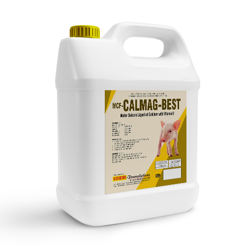
MCF-CALMAG-BEST
Water Soluble Liquefied Calcium with Vitamin D.
Benefits* Prevents the calcium deficiency by absorbing highly concentrated &
bioavailable calcium.
* Prevents Vitamin D deficiency.
* Reduces stress in the birds.
* Helps to reduce drip loss.
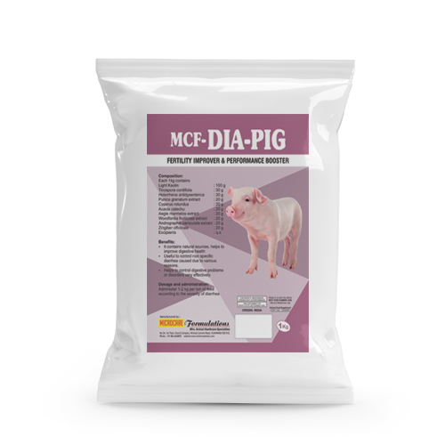
MCF-DIA-PIG
Herbal perpetration with Kaolin for digestive problems.
Benefits* It contains natural sources, helps to improve digestive health.
* Useful to control non specific diarrhea caused due to various reasons.
* Helps to control digestive problems or disorders very effectively.
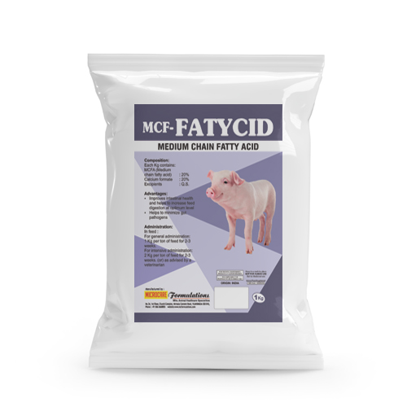
MCF-FATYCID
Medium Chain Fatty Acid.
Benefits*Improves intestinal health and helps to increase feed digestion at optimum level.
*Helps to minimize gut pathogens.
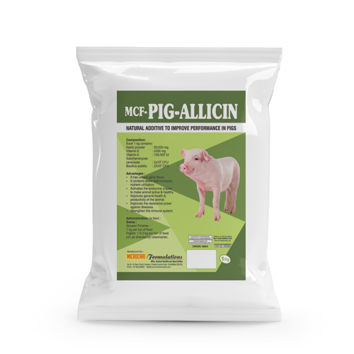
MCF-PIG-ALLICIN
Natural Additive to Improve performance in Pigs.
Benefits*It has unique garlic flavor.
*It contains allicin that increases nutrient utilization.
*Activates the endocrine organs to make animal active & healthy.
*Improves general health & productivity of the animal.
*Improves the resistance power against diseases.
*Strengthen the immune system.
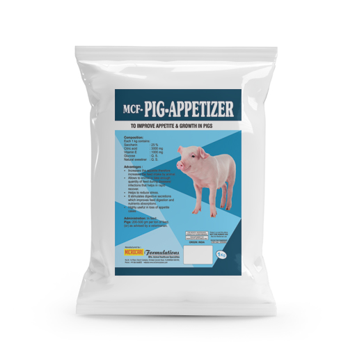
MCF-PIG-APETIZER
To improve appetite & growth in Pigs.
Benefits*Increases the appetite therefore increases the feed intake by animal.
*Allows to animal to take enough quantity of feed during diseases/infections
that helps in rapid recover.
*Helps to reduce stress.
*It stimulates digestive secretions which improves feed digestion and
nutrients absorptions.
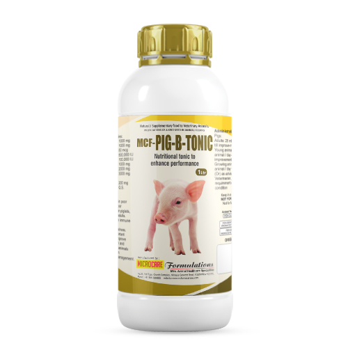
MCF-PIG-B-TONIC
Nutritional tonic to enhance performance.
Benefits*Highly useful in poor growth and poor performance in piglets, growers and
adults.
*Stimulates the immune system.
*Reduces the stress.
*Provides important nutrients to improve general health and activeness in animals.
*Better result in vaccination management.
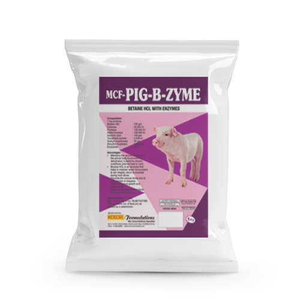
MCF-PIG-B-ZYME
Betaine HCL with Enzymes.
Benefits*Prevents the various stress due to high climate or diseases.
*Helps to improve growth and performance.
*Improves the digestive functions.
*Improves the immunity.
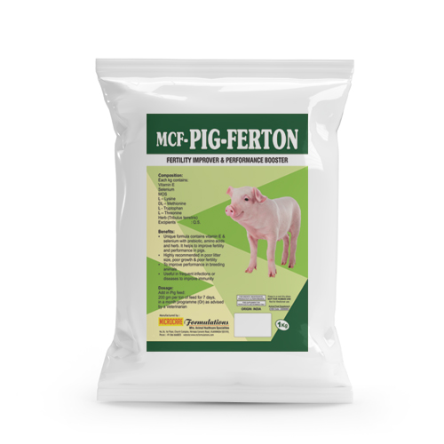
MCF-PIG-FERTON
Fertility Improver & Performance Booster.
Benefits* Unique formula contains vitamin E & selenium with prebiotic, amino acids
and herb. It helps to improve fertility and performance in pigs.
* Highly recommended in poor litter size, poor growth & poor fertility.
* To improve performance in breeding animals.
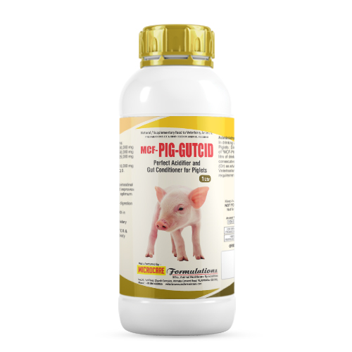
MCF-PIG-GUTCID
Perfect acidifier & gut conditioner for Piglets.
Benefits* It makes gastrointestinal tract acidic and improves its functions at
optimum level.
* Improves feed digestion and efficiency.
* Improves growth in piglets
* Prevents the dietary diarrhea.
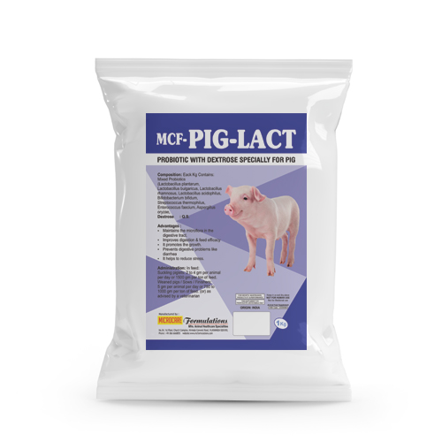
MCF-PIG-LACT
Probiotic with Dextrose Specially for Pig.
Benefits* Maintains the microflora in the digestive tract.
* Improves digestion and feed efficacy.
* It promotes the growth.
* Prevents digestive problems like diarrhea.
* It helps to reduce stress.
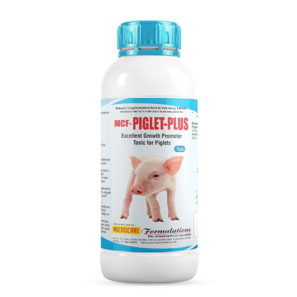
MCF-PIGLET-PLUS
Excellent Growth Promoter Tonic for Piglets.
Benefits* Specially prepared nutritional tonic for piglets to improve health & growth
* This specific nutritional tonic
helps to improve growth rapidly in piglets, also it can be given to adults in
poor conditions.
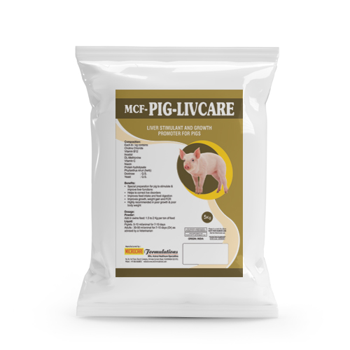
MCF-PIG-LIVCARE
Liver Stimulant & Growth Promoter for Pigs.
Benefits*Helps to correct live disorders.
*Improves feed intake and feed digestion.
*Improves growth, weight gain & FCR.
*Highly recommended in poor growth & poor body weight.
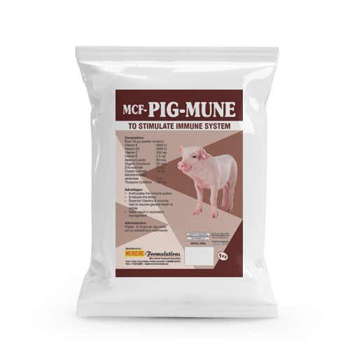
MCF-PIG-MUNE
Vitamins & Minerals tonic for better health.
Benefits* It stimulates the immune system.
* It reduces the stress.
* Essential Vitamins & minerals, help to improve general health of piglets.
* Better result in vaccination management.
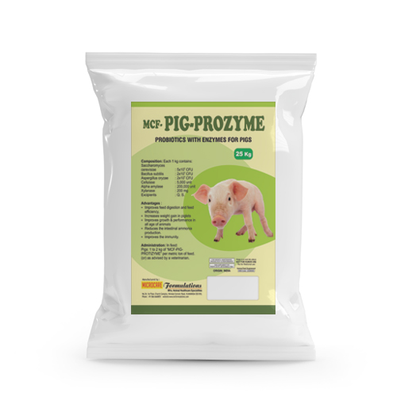
MCF-PIG-PROZYME
Probiotics with Enzymes for Pigs.
Benefits*Improves feed digestion and feed efficiency.
*Increases weight gain in piglets.
*Improves growth & performance in all age of animals.
*Reduces the intestinal ammonia production.
*Improves the immunity.
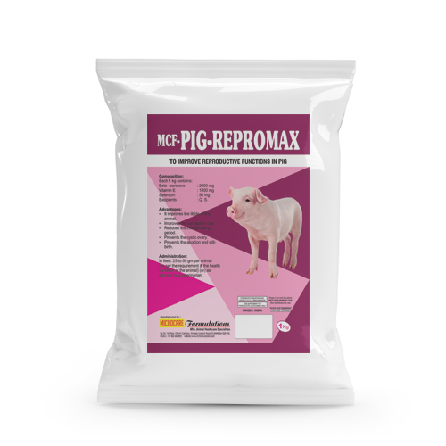
MCF-PIG-REPROMAX
To improve reproductive functions in pig.
Benefits*It improves the libido of the animal.
*Improves the conception rate.
*Reduces the interfarrowing period.
*Prevents the cystic ovary.
*Prevents the abortion and still-birth.
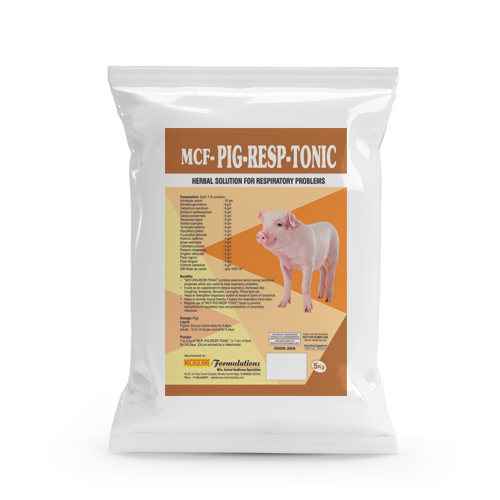
MCF-PIG-RESP-TONIC
Herbal solution for Respiratory problems.
Benefits* "MCF-PIG-RESP-TONIC" contains selective herbs having functional
properties which are useful to treat respiratory problems.
* It acts as an expectorant to relieve respiratory distresses like-Coughing,
Sneezing, Sinusitis, Laryngitis, Pharyngitis etc.
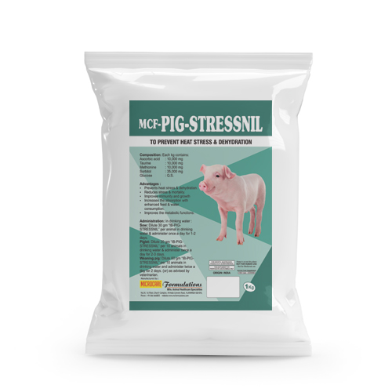
MCF-PIG-STRESSNIL
To Prevent Heat Stress & Dehydration.
Benefits*Prevents heat stress and dehydration.
*Reduces stress & mortality.
*Improves immunity and growth.
*Increases the absorption with enhanced feed & water consumption.
*Improves the metabolic functions.
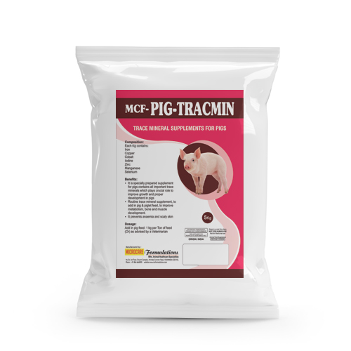
MCF-PIG-TRACMIN
Trace Mineral Supplements for Pigs.
Benefits* It is specially prepared supplement for pigs contains all important trace minerals which plays crucial role to improve growth and proper development in pigs.
* Routine trace mineral supplement, to add in pig & piglet feed, to improve metabolism, bone and muscle development.
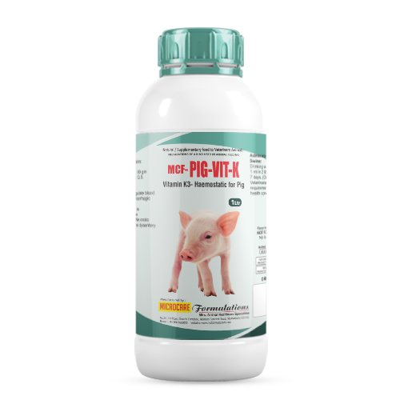
MCF-PIG-VIT-K
Vitamin K3- Haemostatic for Pig.
Benefits*Helps to coagulate blood during all hemorrhagic conditions
*Highly useful in conditions like Coccidiosis, Ne crotic enteritis, swine dysentery etc.
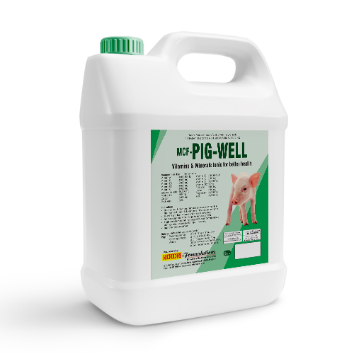
MCF-PIG-WELL
Vitamins & Minerals tonic for better health.
Benefits* It provides all important nutrients
to animals to maintain their
general health & to enhance
individual performance.
* Prevent and treat vitamin and
mineral deficiency.
* Increase appetite which helps to
improve growth.
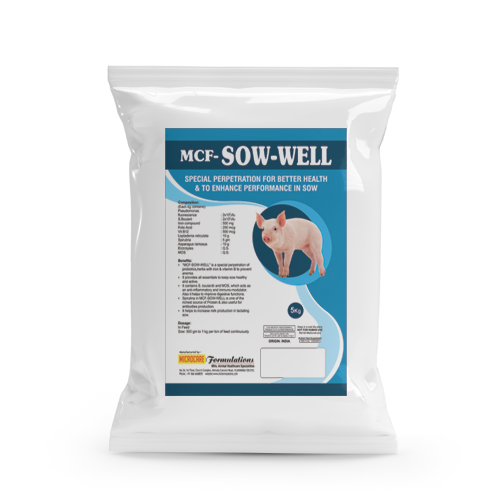
MCF-SOW-WELL
Special Perpetration for better health and to enhance performance in Sow.
Benefits*"MCF-SOW-WELL" is a special perpetration of probiotics, herbs with iron &
vitamin B to prevent anemia
* It provides all essentials to keep sow healthy and active.
* It contains S. boulardii and MOS, which acts as an anti-inflammatory and
immuno-modulator. Also it helps to improve digestive functions.
* Spirulina in MCF-SOW-WELL is one of the richest source of Protein & also
useful for antibodies production.
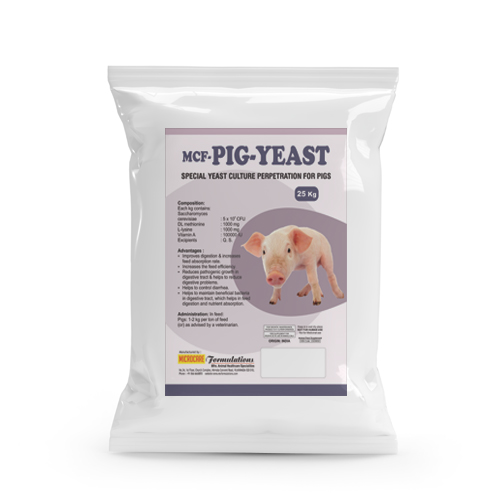
MCF-PIG-YEAST
Special Yeast culture perpetration for Pigs.
Benefits* Improves digestion &
increases feed absorption
rate.
* Increases the feed
efficiency.
* Reduces pathogenic
growth in digestive tract & helps
to reduce digestive problems.
* Helps to control diarrhea.
* Helps to maintain beneficial
bacteria in digestive tract, which
helps in feed digestion and
nutrient absorption.